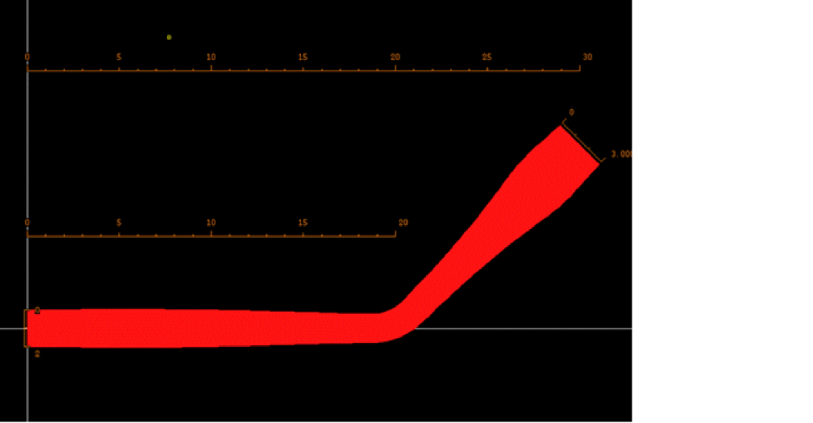

ccWideConnector
ccWideConnector(
g_connector
l_lengthWidths
n_clamp1
n_clamp2
)
=> l_segmentWidths
Description
(Virtuoso Photonics Option) Creates a specification of a path around the specified connector centerline with the width specified by a cubic spline function.
Arguments
|
g_connector
|
A polyCurve or a list of connected polyCurve segments representing the connector centerline.
o_polyCurve | (l_segment...)
where,
-
o_polyCurve is the ID of a ccPolyCurve object.
-
l_segment is a list of polyCurve segments specified by a ccCurve object and a transformation applied to this curve:
(o_curve l_transform)
where,-
o_curve is the ID of a ccCurve object.
-
l_transform is a transformation object in the following format:
((n_offsetX n_offsetY) n_angle)
where:-
n_angle is the rotation angle.
-
n_offsetX and n_offsetY determine the offsets of the X-axis and Y-axis in this format
(0,0).
Each polyCurve segment is assumed to be parametrized by the ascending or descending arc length and an arbitrary initial value.
|
|
l_lengthWidths
|
((n_length n_width)...)
List of spline points specifying the widths of the connector at the specified arc lengths, measured along the centerline of the connector from its first point.
If no width is specified at the arc length corresponding to one of the following:
-
First point of the connector, then the width there is set to the width at the spline point with the largest arc length that is smaller than the minimum arc length.
-
Last point of the connector, then the width there is set to the width at the spline point with the smallest arc length that is larger than the maximum arc length.
If no such spline point exists, then the width at:
-
First point of the connector is set to the width at the spline point with the smallest arc length that is larger than the minimum arc length.
-
Last point of the connector is set to the width at the spline point with the largest arc length that is smaller than the maximum arc length.
|
|
n_clamp1
|
The value of the first derivative of the spline function at the first connector point.
When set to nil, the spline function has zero second derivative at the first connector point.
|
|
n_clamp2
|
The value of the first derivative of the spline function at the last connector point.
When set to nil, the spline function has zero second derivative at the last connector point.
|
Value Returned
|
l_segmentWidths
|
List of polyCurve segments including width expressions that can be passed as an argument to the ccCreatePath function.
((o_curve l_transform t_width)...)
where,
-
o_curve is the ID of a ccCurve object.
-
l_transform is a transformation object in the following format:
((n_offsetX n_offsetY) n_angle)
where:-
n_angle is the rotation angle.
-
n_offsetX and n_offsetY determine the offsets of the X-axis and Y-axis in this format
(0,0).
-
t_width is the width expression as a function of the arc length parameter.
|
Example
connector=ccWaypointConnector(nil nil '((0 0) (20 0) (30 10)) 3 1.0)->connector
cc@0x865e2023
path=ccWideConnector(connector '((10 2) (30 3)) nil -0.1)
((cc@0xc56b5a5
((0.0 0.0) 0.0) "((2+(0.01935412284*t))+((-0.0001935412284)*(t^3)))"
)
(cc@0x5553f7ea
((0.0 0.0) 0.0) "(((1.294376315+(0.2310412284*t))+((-0.02116871056)*(t^2)))+(0.0005120824568*(t^3)))"
)
(cc@0x38b6da2a
((18.75736 3.0) -90.0) "(((1.55965145+((-0.02258597774)*t))+(0.007647233365*(t^2)))+(0.0005120824568*(t^3)))"
)
(cc@0x2d58b6d8
((0.0 0.0) 0.0) "(((4.81304763+((-0.5682818167)*t))+(0.03108374613*(t^2)))+((-0.0005120824568)*(t^3)))"
)
(cc@0x4543edc5
((0.0 0.0) 0.0) "(((3+(0.1*t))+(0.03576862324*(t^2)))+((-0.01512250106)*(t^3)))"
)
)

Related Topics
Curvy Core Connector Functions
Return to top